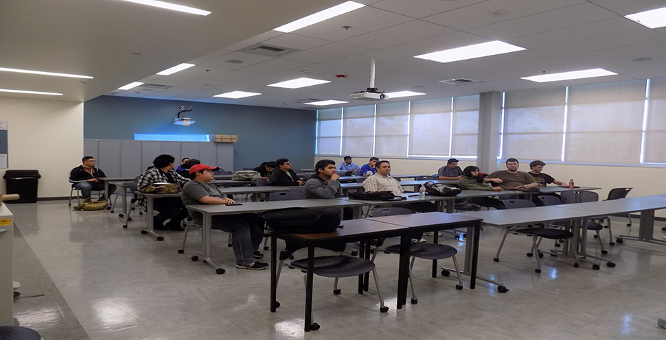

<div id="single-portfolio">
	<div id="portfolio-details" class="container">
		<a class="close-folio-item" href="#"><i class="fa fa-times"></i></a>
		
		<div class="row">
			<div class="col-sm-9">
				<div class="project-info">
					<h3>Information Security Workshops</h3>
					<p>The workshops are designed to give recommendations and to inform attendees about many common dangers they may face in dealing with computers.</p>
					<p>The presentations focused on common attacks like phishing and malware, stressed the importance of having a good password as well as changing it every 3-6 months, updating software and the operating system, and keeping only one antivirus as well as making sure it routinuely checks your system, and how to keep themselves safe on public networks such as the campus itself.</p>
				</div>
			</div>
			<div class="col-sm-3" style="padding-left:15px;padding-right:15px;">
				<div class="project-details">
					<h3>Event Details</h3>
					<p>For: Students and Faculty</p>
					<p>Date: Various Semesters</p>
					<p>Tag: Computer Science, Cyber Security, Workshops, Events</p>
				</div>  
			</div>
		</div>
	</div>
</div>